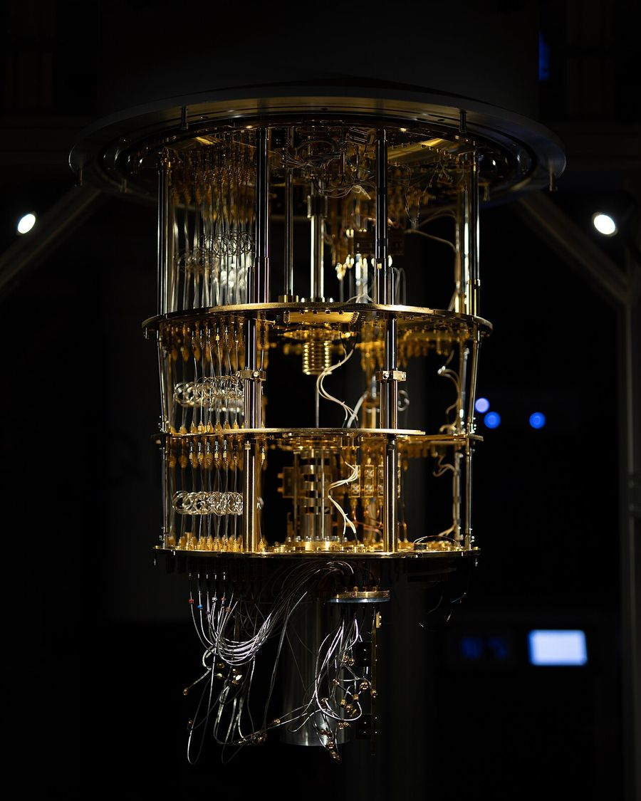
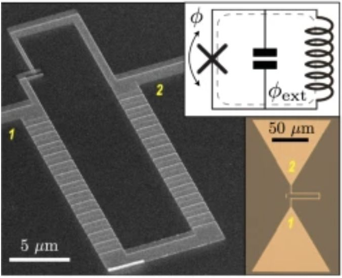
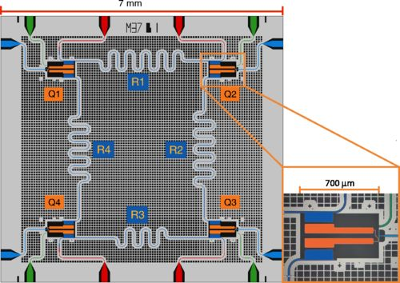
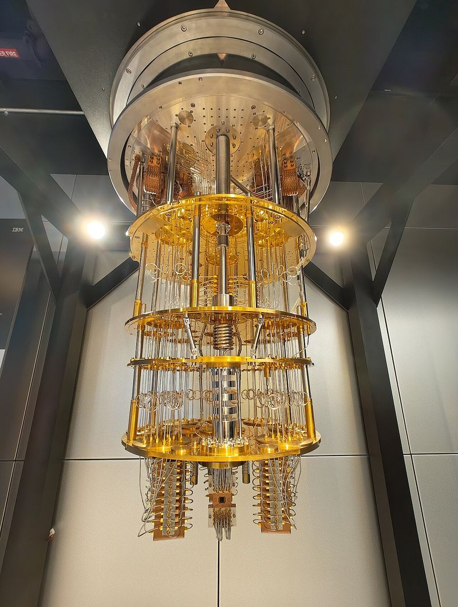
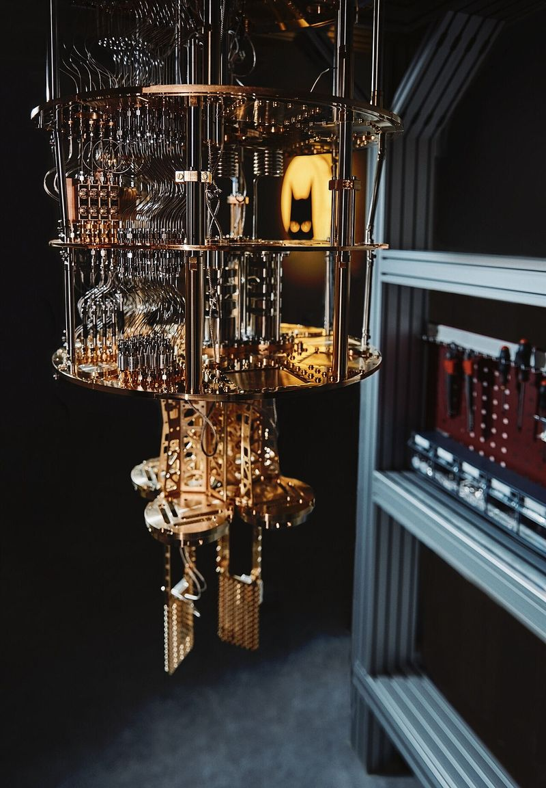

Kuantum bilgisayar, bir RF tezgahındaA quantum computer on an RF bench
Süperiletken bir qubit'i anlamak için yeni bir dil öğrenmeniz gerekmiyor. Rezonatör, Q, gürültü sıcaklığı, Smith abağı ve frekans planı biliyorsanız yolun yarısındasınız. Bu tezgahta her kuantum kavramını, her gün başında oturduğumuz bir cihazın ekranında gösteriyorum: VNA, spektrum analizörü, osiloskop, gürültü figürü ölçeri.
You don't need a new language to understand a superconducting qubit. If you know resonators, Q, noise temperature, the Smith chart and frequency planning, you are halfway there. On this bench every quantum concept is shown on the screen of an instrument we sit in front of every day: a VNA, a spectrum analyser, an oscilloscope, a noise-figure meter.
- TMXC
- ≈10 mK
- f01
- 4–6 GHz
- hf/kBT
- ≈24
- Q = ωT1
- ~10⁶

Tezgahtaki cihazlarWhat's on the bench
Spec satırındaki sayılar tezgahın tamamını özetliyor. Qubit 4–6 GHz'de bir rezonatör. Onu 10 mK'e soğutuyoruz, çünkü 5 GHz'lik bir fotonun enerjisi bu sıcaklıktaki termal enerjinin yaklaşık 24 katı. Kalite faktörü 10⁶ mertebesinde ve bu sayı doğrudan T1 süresidir. Gerisi bildiğimiz mühendislik: kayıp bütçesi, gürültü bütçesi, ısı bütçesi.
The numbers on the spec line summarise the whole bench. The qubit is a 4–6 GHz resonator. We cool it to 10 mK because a 5 GHz photon carries about 24 times the thermal energy at that temperature. Its quality factor is around 10⁶, and that number is simply T1. The rest is engineering we already know: a loss budget, a noise budget, a heat budget.
Qubit, endüktörü doğrusal olmayan bir LC tankıdırA qubit is an LC tank with a nonlinear inductor
Transmon, şönt kapasitörlü bir paralel rezonatördür. Tek fark endüktörün bir Josephson junction olması. Geri kalan her şey bu farktan çıkıyor.
A transmon is a parallel resonator with a shunt capacitor. The only difference is that its inductor is a Josephson junction. Everything else follows from that.
Kuantum mekaniğinde LC rezonatörün enerjisi En = ħω(n + ½) değerlerini alır; n içindeki foton sayısıdır. Seviyeler eşit aralıklı olduğu için 0→1, 1→2 ve 2→3 geçişleri aynı frekanstadır. Bu frekansta sürdüğünüzde enerji bütün merdivene yayılır, iki seviyeyi seçip "0" ve "1" diye kullanamazsınız.
In quantum mechanics an LC resonator has energies En = ħω(n + ½), with n photons inside. The levels are equally spaced, so 0→1, 1→2 and 2→3 all sit at the same frequency. Drive it there and energy climbs the whole ladder; you cannot pick out two levels and call them "0" and "1".
Josephson junction, iki alüminyum film arasında birkaç nanometrelik bir AlOx tünel bariyeridir. Endüktansı içinden geçen akıma bağlıdır:
A Josephson junction is a tunnel barrier of AlOx, a few nanometres thick, between two aluminium films. Its inductance depends on the current through it:

Junction endüktansıJunction inductance
Transmon frekansıTransmon frequency
Koch 2007 [2]Junction ve kapasitanstanFrom junction and capacitance
Termal dolulukThermal occupation
| T | hf/kBT | n̄th | P(|1⟩) |
|---|
Anharmonisite ve Rabi salınımıAnharmonicity and Rabi oscillation
Transmonda 1→2 geçişi 0→1'den yaklaşık EC/h kadar aşağıdadır: α ≈ −200…−300 MHz.[1] Sürüş darbesinin spektrumu |α|'dan dar kaldıkça qubit iki seviyeli bir sistem gibi davranır. Rezonansta sürülen qubit |0⟩ ile |1⟩ arasında gidip gelir; buna Rabi salınımı diyoruz. Darbe alanı π olduğunda durum tam olarak çevrilir.
In a transmon the 1→2 transition sits about EC/h below 0→1: α ≈ −200…−300 MHz.[1] As long as the drive spectrum is narrower than |α|, the qubit behaves as a two-level system. Driven on resonance it swings between |0⟩ and |1⟩, the Rabi oscillation. A pulse of area π flips the state completely.
Çipin %90'ı bildiğiniz mikrodalga devresiNinety percent of the chip is microwave circuitry you know
Kuantum çipi, silikon ya da safir üzerine Al, Nb veya Ta ile çizilmiş bir mikrodalga devresidir. CPW hatlar, kuplaj kapasitörleri, λ/4 rezonatörler, bant geçiren filtreler. Yeni olan tek eleman Josephson junction.
A quantum chip is a microwave circuit patterned in Al, Nb or Ta on silicon or sapphire: CPW lines, coupling capacitors, λ/4 resonators, bandpass filters. The only new element is the Josephson junction.

Haritada bir elemana dokununTap an element on the map
CPW empedansıCPW impedance
Simons [5]Sürüş portu → T1 sınırıDrive port → T1 limit
Paket kutusu TE101Package box TE101
Qubit'i okumak, bir rezonatörün S21'ine bakmaktırReading a qubit means looking at a resonator's S21
Qubit doğrudan ölçülmez. Ona kuplajlı okuma rezonatörünün frekansı, qubit'in durumuna göre 2χ kadar kayar. VNA ekranında bu iki Lorentz eğrisi olarak görünür. Okuma tonunu ikisinin arasına koyar, iletilen dalganın faz ve genliğine bakarız.
The qubit is not measured directly. The readout resonator coupled to it shifts by 2χ depending on the qubit state. On a VNA that shows up as two Lorentzians. We park the readout tone between them and look at the phase and amplitude of the transmitted wave.
Rezonatörü ve kuplajı boyutlamakSizing the resonator and coupling
λ/4 CPW rezonatörλ/4 CPW resonator
Dispersif kayma ve PurcellDispersive shift and Purcell
[1][2]Qi ve Qe'yi Smith abağında ayırmakSeparating Qi and Qe on the Smith chart
Yansımada ölçülen bir rezonatör, Smith abağında bir çember çizer. Çemberin çapı kuplajı söyler: Qe < Qi ise çember merkezi içine alır (aşırı kuplaj), Qe = Qi ise merkezden geçer (kritik), Qe > Qi ise küçük kalır. Laboratuvarda gürültülü veriye çember uydurup iki Q'yu ayırırız.
A resonator measured in reflection traces a circle on the Smith chart. Its diameter tells you the coupling: with Qe < Qi the circle encloses the centre (overcoupled), with Qe = Qi it passes through it (critical), with Qe > Qi it stays small. In the lab we fit a circle to noisy data and pull the two Qs apart.
Yeni bir çip soğuduğunda ilk iki ölçümThe first two measurements on a freshly cooled chip
Önce okuma rezonatörünü güce karşı tararız (punch-out). Düşük güçte rezonatör, qubit'in itmesiyle kaymış frekanstadır. Güç arttıkça qubit doyar ve rezonatör "çıplak" frekansına atlar. Bu atlama qubit'in orada olduğunu kanıtlar. Ardından ikinci bir tonla qubit frekansını ararız (iki tonlu spektroskopi).
First we sweep the readout resonator against power (punch-out). At low power the resonator sits at a frequency pushed by the qubit. As power rises the qubit saturates and the resonator jumps to its "bare" frequency. That jump proves the qubit is there. Then we look for the qubit with a second tone (two-tone spectroscopy).
P1(Δ) = ½·Ω²T1T2/(1 + Δ²T2² + Ω²T1T2); FWHM/2π = √(1 + Ω²T1T2)/(πT2)
Sürüş hattında neler var?What is actually on the drive line?
Qubit darbesi, bir LO ve IQ mikserle üretilir. Spektrum analizöründe istenen tonun yanında LO sızıntısı ve imaj da görünür. Bunlar qubit'in kendi çizgisine, f12'ye ya da komşu qubit'e düşerse istenmeyen bir kapı uygulanmış olur. Frekans planı tamamen bildiğimiz kurallarla yapılır.
A qubit pulse is made with an LO and an IQ mixer. On a spectrum analyser you see LO leakage and the image next to the wanted tone. If either lands on the qubit line, on f12 or on a neighbouring qubit, an unwanted gate is applied. Frequency planning follows rules we already know.
20 nanosaniyelik bir kapının dalga şekliThe waveform of a 20-nanosecond gate
Tek qubit kapısı, Gauss zarflı kısa bir mikrodalga darbesidir. Darbe kısaldıkça spektrumu genişler ve f12'deki geçişi de uyarmaya başlar. DRAG, Q kanalına zarfın türevini ekleyerek bu sızıntıyı bastırır. Osiloskopta I ve Q zarflarını ve IF'e modüle edilmiş çıkışı görüyoruz.
A single-qubit gate is a short microwave pulse with a Gaussian envelope. The shorter the pulse, the wider its spectrum, until it starts driving the f12 transition as well. DRAG suppresses that leakage by adding the envelope's derivative on the Q channel. On the scope we see the I and Q envelopes and the output modulated to IF.
Kriyostat bir link bütçesidirA cryostat is a link budget
Dilution refrigerator, her kademesi farklı sıcaklıkta ve farklı soğutma gücünde olan bir kaskaddır. Sürüş hattındaki zayıflatıcılar oda sıcaklığının termal gürültüsünü kademe kademe söndürür. Ama her dB zayıflatma, bulunduğu kademede ısıya dönüşür.
A dilution refrigerator is a cascade whose stages each have their own temperature and cooling power. Attenuators on the drive line knock down room-temperature noise stage by stage. But every dB of attenuation becomes heat on the stage where it sits.


Sürüş hattı: gürültü ve ısıDrive line: noise and heat
ideal termalizasyonideal thermalisationBirkaç fotonluk sinyal için alıcı tasarımıDesigning a receiver for a few photons
Okuma çıkışı, alıcı tasarımının en uç örneği. İlk kat bir Josephson parametrik yükselteç (TWPA), ikinci kat 4 K'de bir HEMT. Friis denklemi burada da aynen geçerli. Tek fark, referansın 290 K değil kuantum sınırı hf/2kB olması.
The readout output is receiver design taken to the limit. The first stage is a Josephson parametric amplifier (TWPA), the second a HEMT at 4 K. The Friis equation holds as usual. The difference is the reference: not 290 K but the quantum limit hf/2kB.
Kaskad bütçeCascade budget
FriisSayısallaştırıcıda |0⟩ ve |1⟩|0⟩ and |1⟩ on the digitiser
Noktalar sabit tohumlu rastgele örneklerdir, ölçüm değildir.Points are fixed-seed random samples, not measurements.
Tek besleme hattında sekiz qubit okumakReading eight qubits on one feedline
Her qubit'e ayrı bir okuma hattı çekmek ölçeklenmez. Bunun yerine farklı frekanslardaki rezonatörler aynı besleme hattına asılır ve tek bir LO ile, farklı IF'lerde birlikte okunur. Bu bir FDM alıcısıdır: kanal aralığı, komşu kanal bastırması ve ADC bant genişliği arasında bir ödünleşim yapılır.
Running a separate readout line to every qubit does not scale. Instead resonators at different frequencies hang off one feedline and are read together with a single LO at different IFs. It is an FDM receiver: a trade-off between channel spacing, adjacent-channel rejection and ADC bandwidth.
T1 Q faktörüdür, T2 faz gürültüsüdürT1 is a Q factor, T2 is phase noise
Kuantum literatüründeki "uyumsuzluk" kelimesinin arkasında iki tanıdık kavram var. T1 enerji kaybıdır ve doğrudan rezonatörün Q'sudur: Q = 2πf·T1. T2 faz kaybıdır, yani osilatörün faz gürültüsü. Her kayıp kanalı ayrı bir Γ olarak toplanır, tıpkı 1/QL = Σ 1/Qi gibi.
Behind the word "decoherence" are two familiar ideas. T1 is energy loss, simply the resonator Q: Q = 2πf·T1. T2 is phase loss, the oscillator's phase noise. Each loss channel adds as its own Γ, just like 1/QL = Σ 1/Qi.
T1 ↔ Q
Termal fotonlardan dephasingDephasing from thermal photons
[10]Devre şemasındaki her kutu bir darbedirEvery box in a circuit diagram is a pulse
Kuantum devresindeki X, H, CZ gibi kutular, kriyostata inen kablolardan birinden gönderilen belirli darbelerdir. Dönüş eksenini LO fazı, dönüş açısını darbe alanı belirler. Z kapıları ise hiç darbe gerektirmez: sonraki darbelerin fazı yazılımda kaydırılır.
Boxes such as X, H and CZ in a quantum circuit are specific pulses sent down one of the cables into the cryostat. The LO phase sets the rotation axis and the pulse area sets the angle. Z gates need no pulse at all: the phase of later pulses is shifted in software.
Bin qubit'in darboğazı fizik değil, kabloAt a thousand qubits the bottleneck is wiring, not physics
Her qubit'e bir sürüş hattı, ayarlanabilir qubit'lerde ek bir akı hattı ve birkaç qubit'e bir okuma hattı gider. Her koaks kablo, ısıl iletimle her kademeye bir miktar ısı taşır. Kademelerin soğutma gücü sabit olduğundan qubit sayısı bir noktada ısı bütçesine takılır. Esnek (flex) kablolar, kriyojenik CMOS ve çoklama bu yüzden aktif araştırma konuları.
Each qubit gets a drive line, tunable qubits get an extra flux line, and a readout line is shared by a few qubits. Every coax carries some heat to each stage by conduction. Since stage cooling powers are fixed, the qubit count eventually hits the heat budget. That is why flex cables, cryogenic CMOS and multiplexing are active research topics.
Kablo ve ısı bütçesiWiring and heat budget
el hesabıhand estimateBugünkü süperiletken işlemcilerToday's superconducting processors
Aşağıdaki değerler üreticilerin ve makalelerin yayınladığı sayılardır. Metrikler aynı tanımla verilmiyor: biri ortalama, biri medyan, biri eşzamanlı, biri izole ölçüm. Bu yüzden tablo bir sıralama değil, mertebe karşılaştırmasıdır.
The values below are numbers published by vendors and papers. They are not defined the same way: one is a mean, one a median, one simultaneous, one isolated. The table is a comparison of orders of magnitude, not a ranking.
† IBM için resmi belgeye ulaşamadım; değer ikincil kaynaktan alındı.I could not reach IBM's official document; the value is from a secondary source.
Dört tasarım problemiFour design problems
Cevabınızı girin, tezgah kontrol etsin. Çözüm adımları her problemin altında. Hesap makinelerini kullanmak serbest.
Enter your answer and the bench checks it. Worked solutions are under each problem. Using the calculators is allowed.
RF ⇄ kuantum sözlüğüRF ⇄ quantum glossary
KaynaklarReferences
- P. Krantz et al., "A quantum engineer's guide to superconducting qubits," Appl. Phys. Rev. 6, 021318 (2019).
- J. Koch et al., "Charge-insensitive qubit design derived from the Cooper pair box," Phys. Rev. A 76, 042319 (2007).
- A. Blais, A. L. Grimsmo, S. M. Girvin, A. Wallraff, "Circuit quantum electrodynamics," Rev. Mod. Phys. 93, 025005 (2021).
- D. M. Pozar, Microwave Engineering, 4th ed., Wiley (2012).
- R. N. Simons, Coplanar Waveguide Circuits, Components, and Systems, Wiley (2001).
- S. Krinner et al., "Engineering cryogenic setups for 100-qubit scale superconducting circuit systems," EPJ Quantum Technol. 6, 2 (2019).
- F. Motzoi et al., "Simple pulses for elimination of leakage in weakly nonlinear qubits," Phys. Rev. Lett. 103, 110501 (2009).
- C. Macklin et al., "A near–quantum-limited Josephson traveling-wave parametric amplifier," Science 350, 307 (2015).
- C. M. Caves, "Quantum limits on noise in linear amplifiers," Phys. Rev. D 26, 1817 (1982).
- A. A. Clerk, D. W. Utami, "Using a qubit to measure photon-number statistics of a driven thermal oscillator," Phys. Rev. A 75, 042302 (2007).
- A. P. M. Place et al., "New material platform for superconducting transmon qubits with coherence times exceeding 0.3 milliseconds," Nat. Commun. 12, 1779 (2021).
- D. C. Mattis, J. Bardeen, "Theory of the anomalous skin effect in normal and superconducting metals," Phys. Rev. 111, 412 (1958).
- M. Tinkham, Introduction to Superconductivity, 2nd ed., Dover (2004).
- S. Probst et al., "Efficient and robust analysis of complex scattering data under noise in microwave resonators," Rev. Sci. Instrum. 86, 024706 (2015).
- Google Quantum AI, "Willow spec sheet," 9 Dec 2024.
- L. Abdurakhimov et al., "Technology and performance benchmarks of IQM's 20-qubit quantum computer," arXiv:2408.12433 (2024).
- Rigetti Computing, "Rigetti Computing launches 84-qubit Ankaa-3 system; achieves 99.5% median two-qubit gate fidelity milestone," press release, 23 Dec 2024.
- PostQuantum, "IBM Heron r2" industry news (2024), reporting IBM's calibration update (secondary source).
- J. Heinsoo et al., "Rapid high-fidelity multiplexed readout of superconducting qubits," Phys. Rev. Applied 10, 034040 (2018).
- M. D. Reed et al., "High-fidelity readout in circuit quantum electrodynamics using the Jaynes–Cummings nonlinearity," Phys. Rev. Lett. 105, 173601 (2010).
- J. M. Gambetta, F. Motzoi, S. T. Merkel, F. K. Wilhelm, "Analytic control methods for high-fidelity unitary operations in a weakly nonlinear oscillator," Phys. Rev. A 83, 012308 (2011).
Gerçek tasarım için araçlarTools for real design work
GörsellerImages
- IQM Quantum Computer, Espoo — Ragsxl, CC BY-SA 4.0 · Wikimedia Commons
- IBM Quantum System One — Onri Jay Benally, CC BY 4.0 · Wikimedia Commons
- Alice & Bob cryostat — Nilhope, CC BY-SA 4.0 · Wikimedia Commons
- 4-qubit chip — Y. Salathé et al., Phys. Rev. X 5, 021027 (2015), CC BY-SA 3.0 · Wikimedia Commons
- Fluxonium SEM — N. Cottet, H. Xiong, L. B. Nguyen et al., Nat. Commun. (2021), CC BY-SA 4.0 · Wikimedia Commons
Fotoğraflar yalnız boyutlandırıldı.
Photos were only resized.
Bu tezgah neden var?Why this bench exists
Kuantum bilgisayarlar hakkında okuduğum kaynakların çoğu fizikçiler için yazılmış. Oysa bir süperiletken kuantum bilgisayarın donanımının büyük kısmı, RF ve mikrodalga mühendislerinin her gün tasarladığı şeylerden oluşuyor. Kuantum Tezgahı'nı bu boşluğu doldurmak için hazırladım: kuantum kavramlarını, bir RF mühendisinin zaten bildiği cihazların ve hesapların diliyle anlatmak.
Most of what I have read about quantum computers was written for physicists. Yet most of the hardware in a superconducting quantum computer is made of things RF and microwave engineers design every day. I built the Quantum Bench to close that gap: to explain quantum ideas in the language of instruments and calculations an RF engineer already knows.
YöntemMethod
Bütün hesaplar tarayıcıda, açık formüllerle yapılıyor. Çoğu pertürbatif yaklaşımdır ve bir tasarımın ilk turu için uygundur; son tasarım için tam köşegenleştirme (scqubits), EM simülasyonu ve ölçüm gerekir. Literatürden alınan değerler numaralı kaynaklarla verildi. † işaretli değerler tipik mertebelerdir, ölçüm değildir. Punch-out haritası ve IQ dağılımları gösterim amaçlı modellerdir.
All calculations run in the browser from open formulas. Most are perturbative approximations suited to the first pass of a design; a final design needs exact diagonalisation (scqubits), EM simulation and measurement. Values from the literature carry numbered references. Values marked † are typical orders of magnitude, not measurements. The punch-out map and IQ scatter are illustrative models.
Sürüm geçmişiChangelog
Hata gördüyseniz ya da bir cihaz eklenmesini istiyorsanız LinkedIn üzerinden yazabilirsiniz.
If you spot an error or want another instrument on the bench, reach out on LinkedIn.